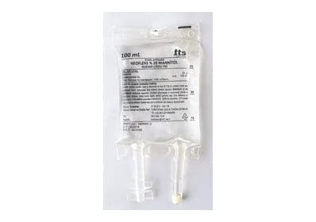

Neofleks %20 Mannitol Sudaki Çözeltisi 100 ml (Setli)

Ne için kullanılır
KT · Bölüm 1NEOFLEKS 420 MANNİTOL SUDAKİ ÇÖZELTİSİ idrar söktürücü etkili mannitol adlı etkin maddeyi içerir ve damar içi yoldan uygulanan bir çözeltidir. Bir grup hastalığa bağlı azalmış idrar miktarını arttırır ya da hiç olmayan idrarın oluşmasını sağlar. Artmış kafa içi basıncı ve göz içi basıncını azaltmak ya da böbreklerden atılan maddelerle olan zehirlenme durumlarında bu maddelerin böbreklerden atılımını teşvik etmek amacıyla da kullanılır. NEOFLEKS 20 MANNİTOL SUDAKİ ÇÖZELTİSİ, 100 mi, 150 ml, 250 mi, 500 ml ve 1000 ml'lik polipropilen torbalarda sunulmuştur. Setli ve setsiz iki formu bulunmaktadır. İlaç yalnızca toplardamar içine ve bu amaca uygun bir plastik boru (set) aracılığıyla uygulanır.